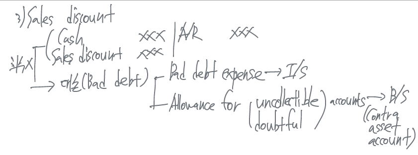

Receivables
Receivables (수취채권)
an amount due from another party. Company’s claims to the future collection from cash.
Receivable 종류 - trade receivable, other receivable
Trade receivable (매출채권: 일반적인 상거래에서 발생한 외상채권)
Accounts receivable - oral promise to pay debts. Result from the sale of goods and services for credit sales
Notes receivable - Written promise to pay debts. Claims from which formal credit arrangements between a creditor and a debtor.
Notes의 종류
Promissory note (약속어음) - Written promise to pay a specified amount of money at a specific future date
Loan note (융통어음)
trade note (상업어음, 진성어음)
interest bearing note (이자부어음)
- Interest = principal of the N/R * annual interest rate * time expressed in years
non-interest bearing note (무이자부어음)
Other receivables (non-trade receivables)
일반적인 상거래 이외에서 발생한 채권
Interest receivable, advance to employees (가불), income tax refundable receivable etc.


Valuation of A/R (대손 회계처리방법)
회수가 불가능한 채권에 대한 대손 (written-off) 처리
bad debt expense (uncollectible account expense) - an expense account to record uncollectible receivables
allowance for uncollectible (doubtful) accounts - 대손충당금 (contra assets account), amounts estimate to be uncollectible
Direct write-off method (직접차감법) - non-GAAP
수익이 발생하는 시점에 대손비용을 인식하지 않고 실제 대손이 확정되는 시점(bad debt is recognized when the receivable becomes uncollectible/write-off)에 대손비용을 기록하는 방법 - 수익/비용의 인식시점이 서로 다를 수 있다 (no-matching)
기말 보유 매출채권에 대손이 예상되더라도 대손충당금과 bad debt expense를 인식하지 않으므로 기말 A/R과 net income이 과대 계상되는 문제가 있다.
allowance method (충당금설정법) - GAAP
매 회계기간 말에 예상되는 미래 대손금액을 추정 (take into account the possibility of credit losses over the entire life of individual receivable)하여 대손상각비와 대손충당금을 기말에 adjusting entries로 기록하는 방법
장점
- it records estimates BDE in the period when the related sales are recorded.
- It reports A/R on the B/S at the estimated amount of cash to be collected
- 즉,
revenues와 expenses를 적절히 matching 시키며, 기말 자산을 net realized value (실현가능가치)로 평가하는 방법→ 회계기준에서는 단기채권은 NRV로 평가하며 장기채권은 present value로 평가한다.
- 즉,


Estimating bad debt expense (대손상각비를 추정하는 방법)
percentage of sales method - I/S approach
I/S relation between Bad debt expenses & sales
\[ \text{credit sales} \times \text{Uncollectible \%} = \text{1년 동안 bad debt expense (matching principle)} \]

Percentage of receivables method - B/S approach
B/S relation between A/R & the allowance for doubtful accounts
These method is to make the allowance for doubtful accounts equal to the portion of A/R that is estimated to be uncollectible.
\[ \text{Allowances for doubtful accounts (required balance)} = \text{Ending A/R} \times \text{uncollectible \%} \]
Aging of A/R method (연령분석법) - A/R을 발생시점별로 구분하여 각 시점별로 서로 다른 대손률을 적용하여 기말 대손충당금을 설정하는 방법
percent of total ending A/R method (기말채권잔액비례법) - 기말 A/R 총액에 대하여 하나의 대손률을 적용하여 기말 대손충당금을 설정하는 방법
\[ \text{Adjusting entry (bad debt expense)} = \text{required estimated balance} - \text{existing unadjusted balance} \]


A/R과 대손충당금의 증감분석
\[ \text{ending A/R} = \text{beginning A/R} + \text{net credit sales} - \text{cash collection} - \text{write off} \]
\[ \text{ending allowance} = \text{beginnig allowance} + \text{write up} + \text{adjusting entries} - \text{write off} \]

Deposing of receivables
Disposing of T/R (처분) - sell their receivables to another company for cash, shortening the cash to cash operating cycle.
- sale of receivables (factoring) - 외상매출금의 채구너자가 외상매출금을 만기 이전에 금융기관인 factor에게 양도하면서 factoring fee를 제외한 나머지 금액을 만기 이전에 현금화 시키는 방법

- discounting a note (어음의 할인) - the transfer of a N/R to a financial institution either by pledging the note as collateral for a loan (차입금에 대한 담보제공) or by selling the note (어음 매각)

- credit card sales (신용카드 매출액)

ratio analysis
Accounts receivable turnover ratio (매출채권 회전율)
It shows how often receivables are received and collected during the period. The number of times the company collects (net) A/R during the period.
매출채권 회전율이 클수록 외상매출금 현금회수기간이 빠르다
\[ \text{Accounte receivable turnover ratio} = \frac{\text{sales revenue}}{\text{average A/R}} \]
Average collection period in days (매출채권 평균회수기간)
\[ \text{average collection period in days} = \frac{\text{365 days}}{\text{A/R turnover ratio}} \]